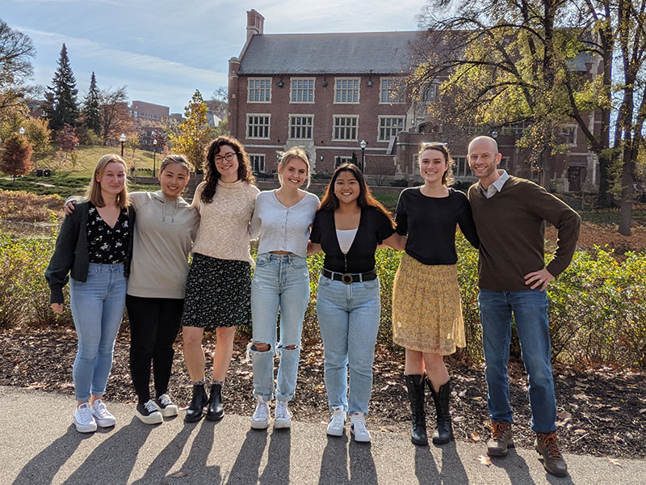

Welcome!Directed by Dr. David Osher, the Cognition and Brain Circuitry Laboratory is based in the Department of Psychology at Ohio State University. We aim to understand the relationship between brain connectivity, function, and behavior, with a special focus on visual perception and attention. We do this through a variety of machine learning techniques, enabling us to use a subject's own, unique brain connectivity pattern, to parcellate their brain into meaningful units, predict how their brains will respond to new stimuli, and even predict their behavior. We use a combination of behavioral assessments, eye-tracking, functional and diffusion neuroimaging, and computational modeling.  |